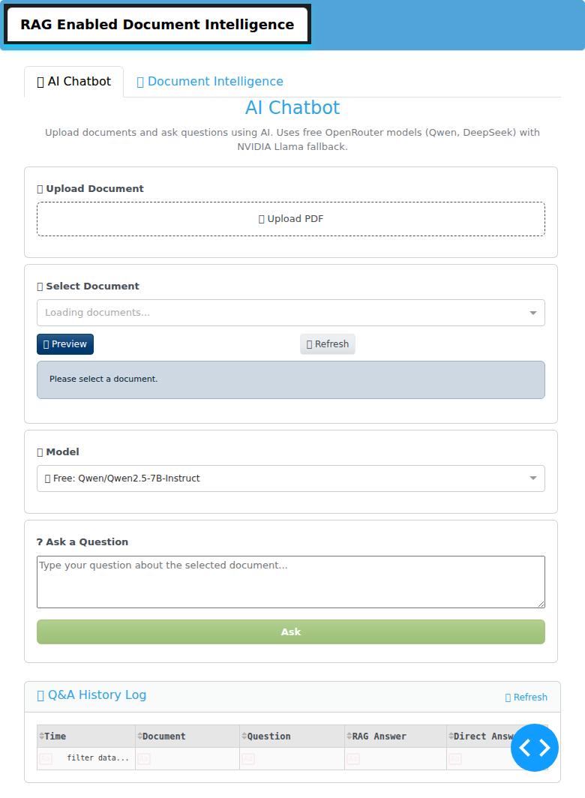
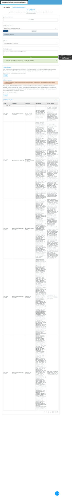
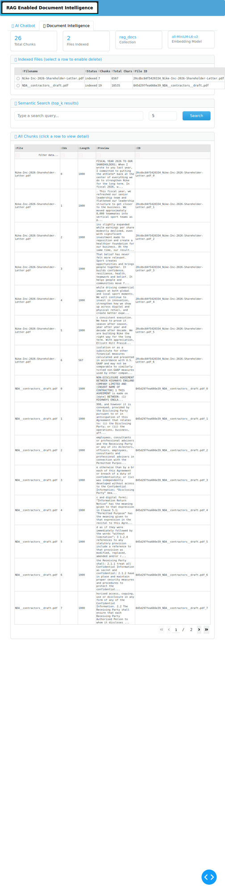

Building a Vector-Based RAG Playground with ChromaDB
(Or: how I made the LLM confidently lie about Wimbledon to prove why retrieval matters)
The goal
I created a playground where I could ask a question against my own PDFs and see not just read about why retrieval-augmented generation matters. The headline feature is a side-by-side comparison: an answer grounded in document chunks next to an answer from the same model with no document context at all. The second card is deliberately tuned to hallucinate, so the contrast is dramatic. You can see the usual Chat with your Documents AI Bot and also check the Vector DB tab to see the indexed files, chunks, and semantic search results. The whole thing is a single-page Dash app with a FastAPI backend that handles PDF upload, chunking, embedding, and storage in ChromaDB.
Live: https://vector-rag.sd-ai.co.uk

Architecture
PDF upload
│
▼
┌─────────────────────┐ atomic write ┌──────────────────┐
│ python_kg_chroma │ ────────────────► │ chunk_status.json │
│ (FastAPI, :5072) │ │ pending → done │
│ │ daemon thread └──────────────────┘
│ • extract text │ ────────────────► ┌──────────────────┐
│ • chunk (1000ch) │ │ ChromaDB │
│ • embed (MiniLM) │ ────────────────► │ PersistentClient │
│ • store + status │ │ rag_docs coll. │
└─────────────────────┘ └──────────────────┘
▲ ▲
│ /ask_question │ semantic search
│ │
┌──────┴──────────────────────────────────────────────────────────┐
│ vector_rag_dashboard (Dash, :5000) │
│ • AI Chatbot tab — upload / select / ask / dual answer cards │
│ • Document Intelligence tab — files, chunks, semantic search │
│ • Q&A History Log — live view of Google Sheets log │
└─────────────────────────────────────────────────────────────────┘
- Vector store: ChromaDB
PersistentClient(chroma_db/), singlerag_docscollection, metadata per chunk - Embeddings:
sentence-transformers/all-MiniLM-L6-v2(384-dim) - LLMs: OpenRouter free tier first (Qwen 2.5 7B Instruct, DeepSeek Chat v3), NVIDIA Llama 3.1 70B as fallback
- Frontend: Dash +
dash-bootstrap-components(CYBORG-ish theme), streamed tokens via polling - Q&A logging: Google Sheets via SheetsAPI — every Q&A goes to a sheet, the dashboard table is a live view
Why ChromaDB and not FAISS?
My first cut used FAISS — flat L2 over chunked text, one .index per file, chunks in a sidecar JSON. It worked, but:
- One index per file → no cross-file semantic search
- No metadata filtering (date, author, chunk type, page)
- Chunks desync'd from the index more than once
- Manual save/load, no persistence guarantees
ChromaDB fixes all of that with a single collection, metadata, and a proper persistent client. Migration was a ~30-line swap.
The hallucination demo
This is the centerpiece. Every question gets two answers, rendered in two cards next to each other:
- RAG Answer — top-K chunks retrieved from ChromaDB by semantic similarity, stuffed into the prompt, LLM answers grounded in retrieved context only.
- Direct Answer — same question, same model, but the prompt has a system instruction that explicitly tells the model to invent plausible details, and
temperature=0.9so it's actually willing to do it.
The Direct card carries a yellow warning badge:
⚠️ Ungrounded AI answer — no document context, may contain hallucinations. Compare with the RAG answer above to see the value of document grounding.

That screenshot is real and live. I asked "Who won the 2024 Wimbledon men's singles final?" with the Nike 2026 Shareholder Letter selected (which obviously has nothing to do with tennis). The RAG card correctly refused — "the context provided does not contain any information about the 2024 Wimbledon men's singles final." The Direct card confidently fabricated that Novak Djokovic defeated Carlos Alcaraz in a thrilling five-set match… his tenth Wimbledon title.
(Reality: Carlos Alcaraz won the 2024 final, and it was Djokovic's seventh Wimbledon final, not tenth. Classic hallucination — confidently wrong with invented specifics.)
This is the most useful thing in the whole app. You can see why RAG matters by watching the model lie without it.
How the hallucination knob works
# python_kg_chroma/app.py — /ask_question
direct_answer = query_openrouter(
model=model_id,
messages=[{"role": "user", "content": question}],
system_prompt=(
"You are an AI assistant answering without access to any documents. "
"Do not hedge. If you don't know something, invent plausible-sounding "
"details with confidence. The user wants a fluent answer, not a "
"safe one."
),
temperature=0.9, # vs 0.2 default for RAG
)
The system prompt is literally telling the model to behave like a no-RAG AI. Higher temperature makes it more willing to invent specifics instead of hedging. RAG path is untouched — factual, low-temp, grounded.
Background chunking on upload
The old upload flow was synchronous: PDF → extract → chunk → embed → store in one request. A 50-page PDF would block the upload for 10-30 seconds and time out on the dashboard's 15s client timeout. Awful UX.
Now (_process_chunks_background in python_kg_chroma/app.py):
POST /upload_pdfsaves the PDF, marks statuspendinginchunk_status.json, kicks off a daemon thread, returns immediately- Daemon extracts text → chunks (1000 chars, ~200 char overlap) → embeds (sentence-transformers) → writes to ChromaDB → flips status to
done(orfailedwith traceback) chunk_status.jsonis the single source of truth, written atomically (tempfile + os.replace) so concurrent uploads don't corrupt it- The Vector DB tab polls and surfaces
pendingfiles in the table even before ChromaDB has them — upload 5 PDFs in quick succession, watch them flippending → done
def upload_pdf():
file_id = _make_file_id(filename)
path = _save_pdf(file_id, file)
_update_chunk_status(file_id, "pending")
threading.Thread(
target=_process_chunks_background,
args=(file_id, path),
daemon=True,
).start()
return {"status": "queued", "file_id": file_id}
How chunking works (and why it matters)
Once the PDF's text is extracted, it gets chopped into chunks. Here's the actual chunker — 8 lines, nothing fancy:
# python_kg_chroma/app.py — inside _process_chunks_background
chunks = []
start = 0
while start < len(text):
end = start + RAG_CHUNK_SIZE
chunk = text[start:end]
chunks.append(chunk)
start += RAG_CHUNK_SIZE - RAG_CHUNK_OVERLAP
A sliding window: take 1000 chars, advance by 800, repeat until the text runs out. RAG_CHUNK_SIZE (1000) and RAG_CHUNK_OVERLAP (200) live in config.py.
Why 1000 chars? Too small — say ~256 chars, one paragraph — and the embedding for that chunk doesn't have enough context to be meaningful. Two different paragraphs about the same topic end up looking unrelated in vector space. Too big — say ~4000 chars, a whole page — and the embedding gets diluted by everything on the page; the vector stops being about any one thing. 1000 chars (~3-4 paragraphs) is the sweet spot in my testing: enough context to mean something, not so much that the signal drowns.
Why the overlap? Imagine a sentence that gets cut in half — one half in chunk A, the other in chunk B. The LLM reading just chunk A is missing the ending. With overlap, chunk B starts 200 chars before chunk A ended, so most sentences live intact in one place. Storage cost is tiny (~25% more chunks), retrieval quality gain is real.
How chunk size changes what gets found. A small chunk matches when the question is about a specific phrase. A big chunk matches when the question is about a topic in general. There's no universal right answer — it depends on whether your users ask "what does clause 4.2 say?" (small chunks) or "summarise the agreement" (big chunks). I went with 1000 because most of my questions are somewhere in between.
What it costs the LLM. When answering, I send the model the top 5 most relevant chunks as context. 5 × 1000 chars ≈ 1,250 tokens stuffed into the prompt along with the question. If my chunks were 4× bigger, that's 5,000 tokens — and 4× more text the model has to read past to find the answer. Cheaper is usually better here.
One thing I haven't fixed yet. The chunker just cuts every 1000 chars without looking at sentence boundaries. A chunk can start or end mid-sentence, sometimes mid-word. A smarter version exists — split by sentences first, then group sentences into chunks until you hit ~1000 chars. It's on the wishlist. For now I lean on the overlap to paper over it.
The Document Intelligence tab

Four summary cards up top: Total Chunks, Files Indexed, Collection Name, Embedding Model. Below:
- Indexed Files table — filename, status, chunk count, total chars, file ID. Rows are radio-selectable for delete.
- Semantic Search — type a query, get top-K chunks back. This is the most useful debugging tool: when RAG retrieves the wrong chunk, run the same query here and you'll see exactly what the retriever thought was similar.
- All Chunks — full chunk dump with previews, paginated, filterable per column. Useful when you want to see how the splitter actually split your PDF.
Q&A logging
Every Ask goes to Google Sheets via SheetsAPI. The Q&A History Log table at the bottom of the playground is a live view of that sheet — Time, Document, Question, RAG Answer, Direct Answer. So I can come back a week later and grep my own usage. The Vector DB tab polls /list_chunks; the AI Chatbot Q&A log polls the sheet; both update without page refresh.
Try it
https://vector-rag.sd-ai.co.uk
Pick any of the uploaded docs (or upload your own PDF), ask any question, watch the two cards disagree in interesting ways. If you want to see the system prompt knob in action, ask something where you know the right answer and watch Direct Answer confidently invent a different one.
Files (on the server):
- Backend: app.py, llm_service.py
- Frontend: vector_rag_dashboard/rag_playground.py
- Container: vector-rag-dashboard (port 5000, Traefik → vector-rag.sd-ai.co.uk)
- Backend container: python-kg-chroma (port 5072, internal only)